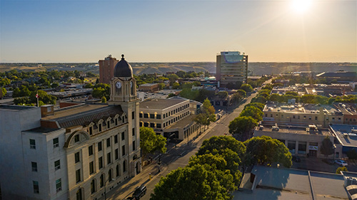

In Lethbridge their many jobs like assistant general manager, sales associate, auto detailer. The economy of Lethbridge is central to the commercial, distribution, financial and industrial sectors. The economy has become more diversified. Agriculture and agri-food are core wealth-generating industries for southern Alberta with more than 1,200 related businesses in the Lethbridge area.
These are some of the biggest industry sectors make up the health and education services to 21%, wholesale and retail 17% and leisure, hospitality, services 13%. The business activity is health care and social assistance, educational services. Fun fact in agricultural, the southern Alberta region has an annual production capacity of over 860,000 acres in canola crops - 21% of the Alberta total Canola crops are grown here.